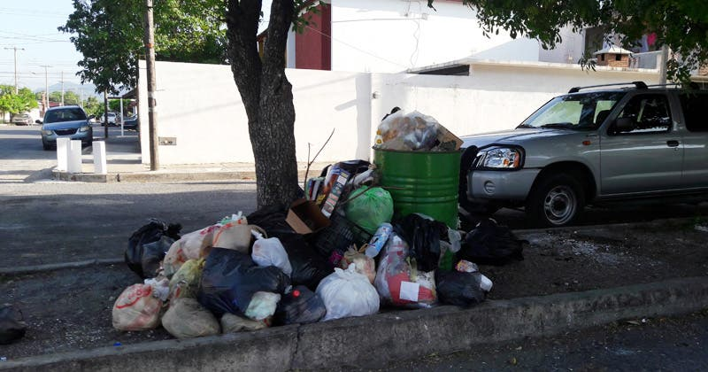
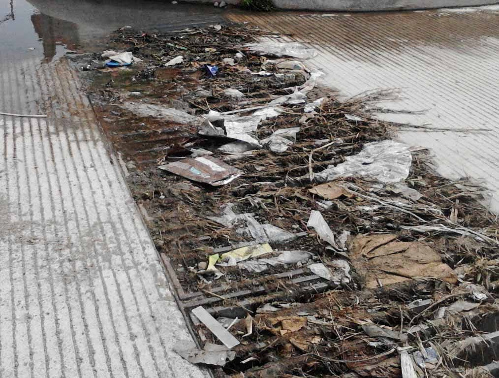
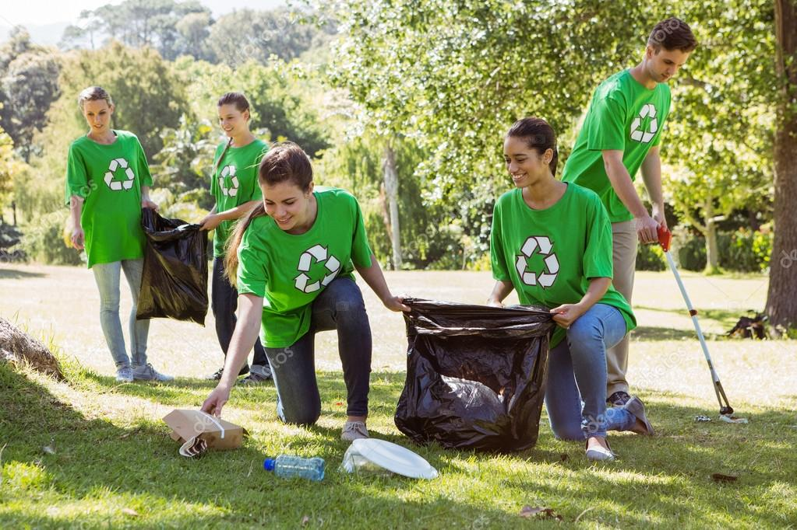
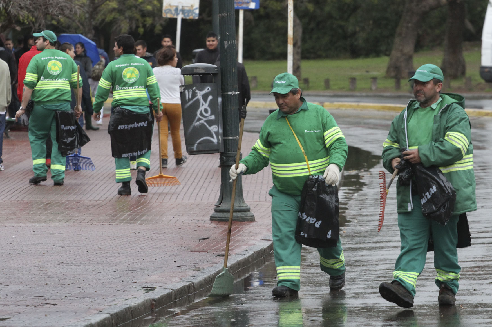
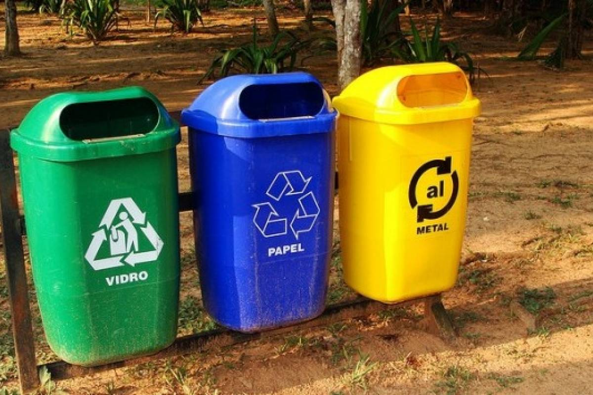
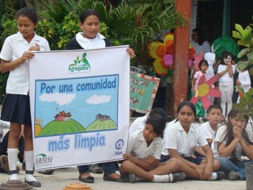

La basura es un problema con el cual dia a dia nos vemos afectados,
nuestras calles y colonias se ven afectadas por la basura excesiva
en las calles, sobre todo por la que no es depositada en contenedores,
la mayoria de veces por la falta de estos. pero seamos sinceros ¿a quien
le gusta ver su colonia llena de basura? A nadie por su puesto.

Ahora, que podemos decir de las "inundaciones" por causa de la basura que tapan las coladeras,
esto trae aun mas problemas
y consecuensias, y se pone en riesgo nuestra salud y la de los que nos
rodean, eso sin mencionar las plagas de roedores que llegan a surgir de las alcantarillas a causa de esto.

¿Que podemos hacer para erradicar por completo estos problemas?
Tener un plan de accion es una buena ideapara empezar a limpiar nuestras calles, en este plan se debe de dar propuestas
de solucion y se debe basar en la participasion de los vecinos de la comunidad y si se puede de miembros del ayuntamiento. para comezar
se puede realizar una lista de labores en la cual se asigne las tareas que le tocan a cada vecino como los dias en lo que los debe llevar
a cabo, esto se puede realizar mediante roles de labor. algo de lo que se puede hacer para dar comienzoes limpiarlas alcantarillas para
que queden libres de desechos, tambien recoger la basura que este regada y depositarla en los contenedores, tambien pedir
ayuda a los encargados dde recoleccion, en este caso a la "COSEPLAT" para que tome medidas en cuanto a esto.


Contar con contenedores separados de basura es otro metodo eficas de controlar la basura, ya que al separarla contamina menos y es mas facil
su descomposicion o reutilizacion dependiendo el caso. facilita el trabjo de las personas encargadas de recoger la basura y ayudamos
al medio ambiente. en ocasiones es un poco dificil encontrar estos tipos de contenedores, pero el dia de hoy los traemos hasta la puesrta de su hogar
, simplemente de click en la fotografia y lo enviara a una pagina en donde puede comprar estos productos.

Una vez relizada la limpieza de la colonia, debemos esforzarnos por mantenerla a futuro de la misma manera para no recaer en donde empezamos,
al hacer esto asi nuestra colonia tendra una mejor vista a las personas que vienen de visita pero sobre todo sera satisfactorio verlo con nuestros
propios ojos. para que esto continue asi es esencial enseñar a los mas pequeños del hogar a separar la basura y a reciclar, pero sobre todo dejarles
muy claro la importancia de esto.

Espero que esta breve informacion te haya sido util para que tu colonia o comunidd esten libre de basuray no haya problemas ni enfermedades
relacionadas a esta, para que con orgullo todos podamos decir "BASURA CERO" y acabar con este problema.